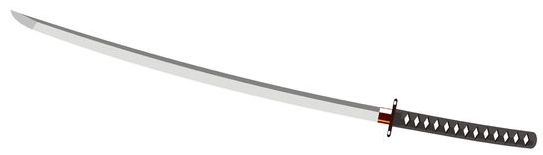
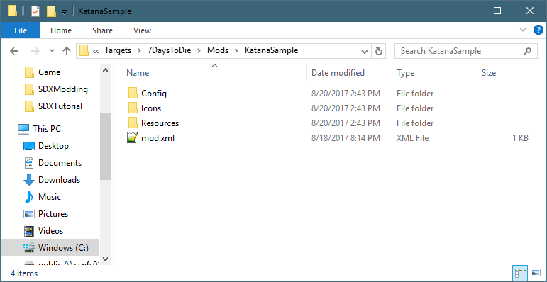
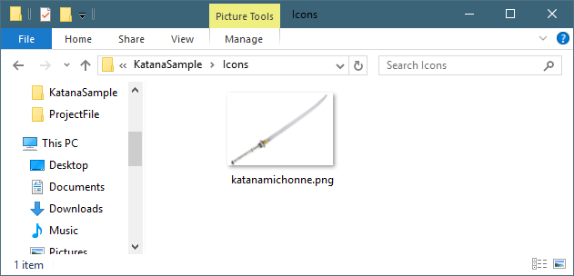
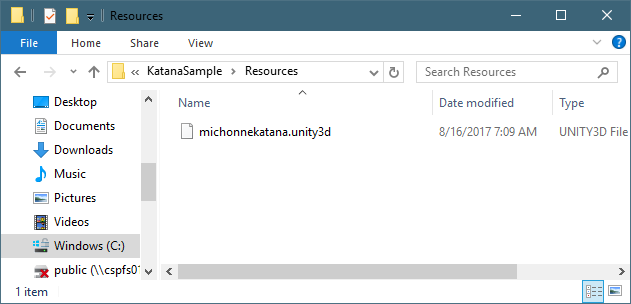

The Katana Mod is a simple Mod to install and add to the game.

The Config Folder of the Katana Mod contains the XML snippet that will be included into the game's DLL files. For the Katana Mod, this includes an Item that simply extends the existing machete item, but uses a custom mesh file.
File: KatanaSample\Config\Katana.xml |
<configs> <!-- This tells SDX to add to the Items.xml --> <config name="items"> <!-- This tells SDX to add the following Items to the bottom of the Items list --> <append xpath="/items">
<!-- New item will be Katana --> <item id="" name="katanamichonne"> <!-- Extend it from the machete, but add the custom mesh --> <property name="Extends" value="machete"/> <property name="Meshfile" value="#michonnekatana?katana" /> </item> </append> </config> </configs> |
The Icons folder contains the item's inventory icons for the mod.

When the mod gets compiled, all files will be copied to your "Working\Mods\SDX\ItemIcons\" folder.
The Resource folder contains the unity3D bundle, which contains the 3D model of the Katana sword.

When the mod gets compiled, all files will be copied to your "Working\Mods\SDX\Resources\" folder.
The mod.xml file is used by the SDX Launcher to compile and find its files. This information shows up in the SDX Launcher.
File: KatanaSample\mod.xml |
<mod> <info> <!-- Information about the Mod, the author and version information --> <!-- These are displayed in the SDX Launcher --> <author>sphereii</author> <name>KatanaSample</name> <description>Sample Katana SDX Mod</description> <mod_version>1.0</mod_version> <game_version>16.2</game_version> <launcher_version>0.0.0</launcher_version> </info>
<!-- This references any config files that SDX needs to merge into your files --> <config_mods> <import file="Config\Katana.xml" /> </config_mods>
</mod> |
Created with the Personal Edition of HelpNDoc: Create cross-platform Qt Help files